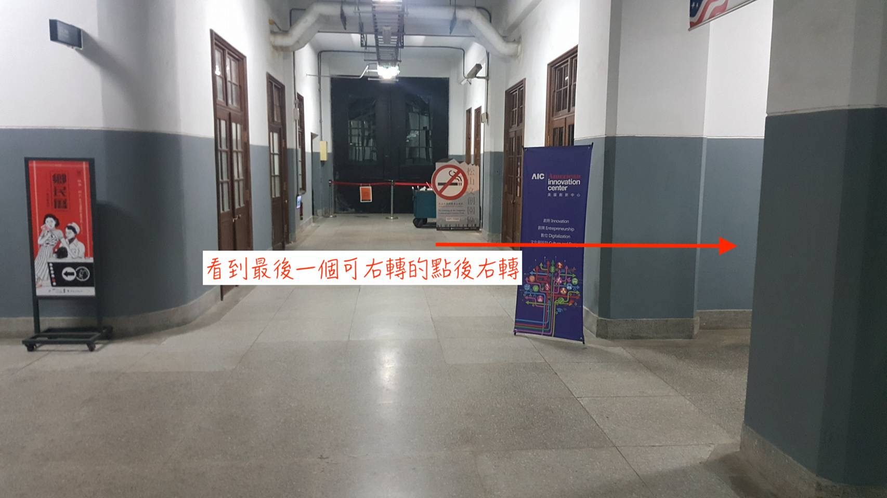

粉絲頁： https://www.facebook.com/twaic/
地址：台北市信義區光復南路133號1樓 (地圖)
(在松菸文創園區內)
大眾運輸工具：
- 不管哪一種都要走很遠
-
捷運：國父紀念館站 5 號出口、市政府捷運站 1 號或 2 號出口 -
公車：聯合報站
如何走到 AIC
- 國父紀念館站 5 號出口，出來後沿著松菸外圍走，走到松菸入口後進入松菸
- 到松菸區域後會看到倉庫(各式展覽場地)與誠品，AIC 入口位於最靠近誠品的倉庫對面)
- 入口正面照
- 進入後直線往前，走到最後一個可右轉的點(差不多是走到底)後右轉

 - 右轉後即可看到 AIC